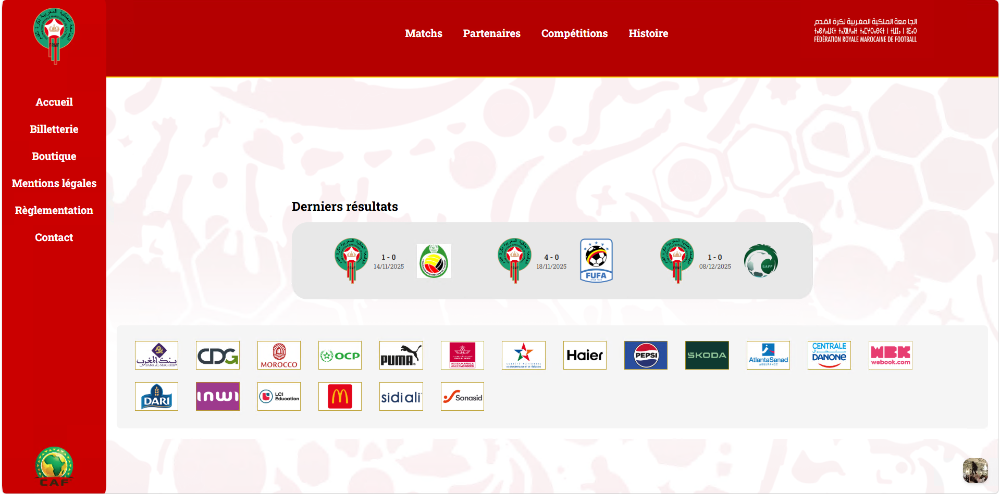
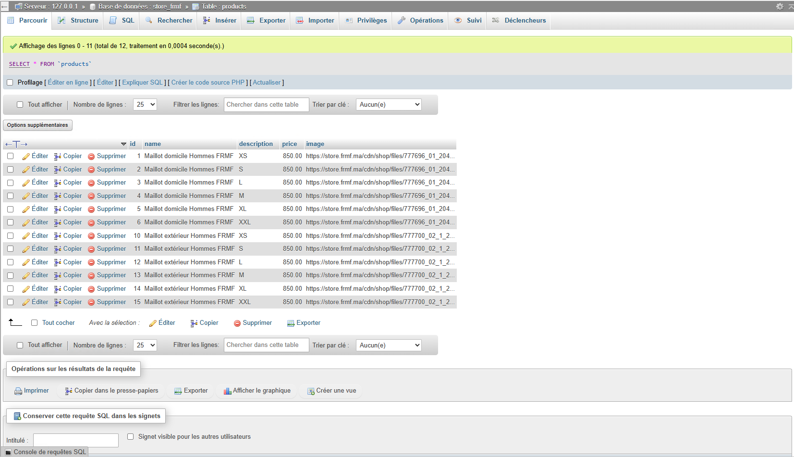
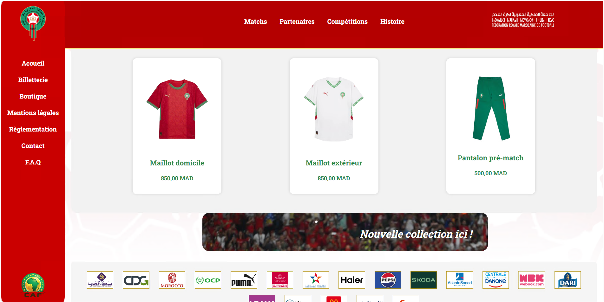
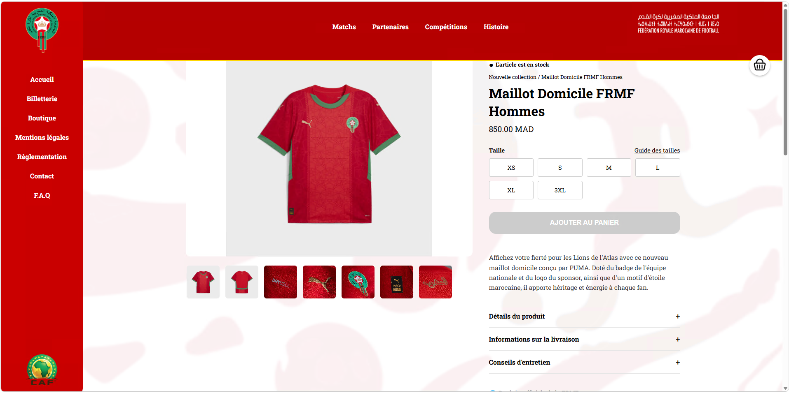
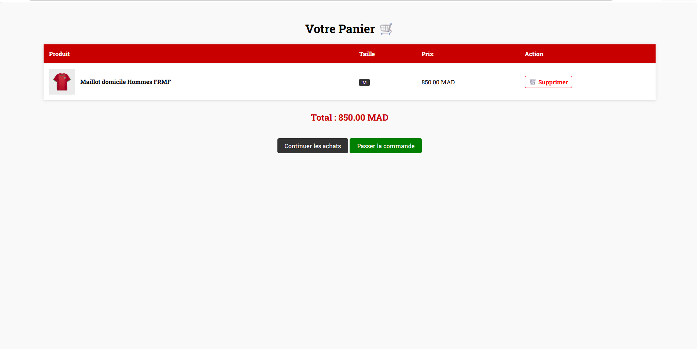

Création de la base de donnée afin d'y enregistrer les types de produits vendus sur la boutique
Design graphique sur papier du site, couleur, themes, placements des éléments comme le panneau de navigation
Création de l'interface pour les utilisateur qui a pour but d'être facilement compréhensible, simple et originaleo
Présentation des différents produits vendus, avec les prix, et création des sous pages produits, avec une option d'ajout au panier




